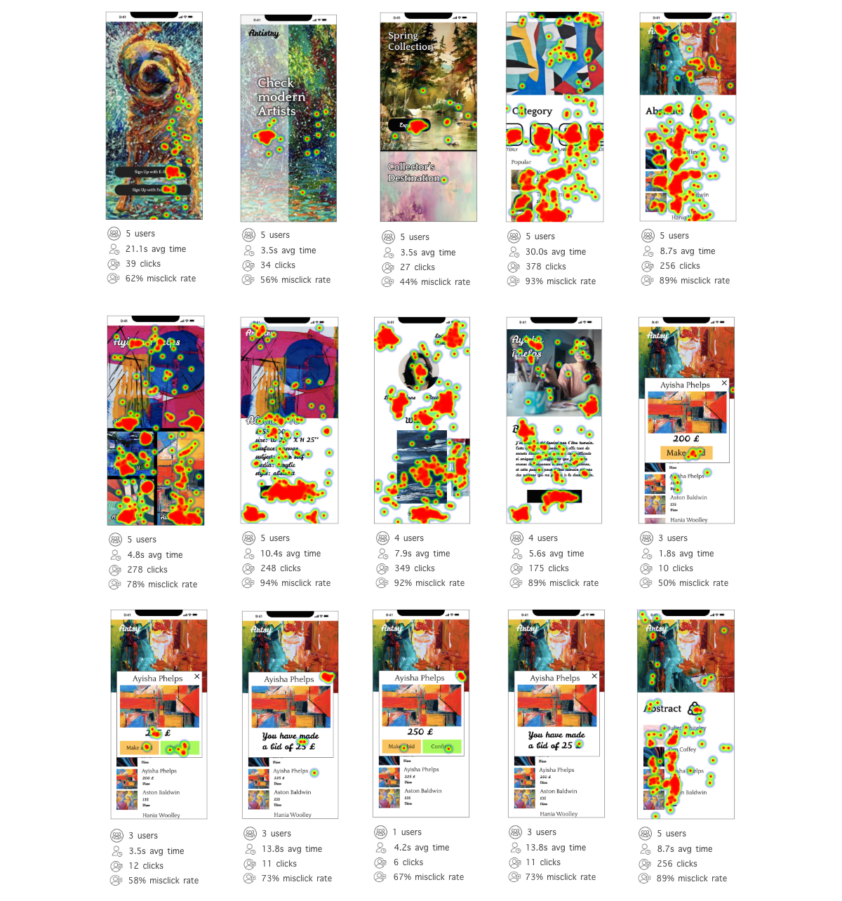
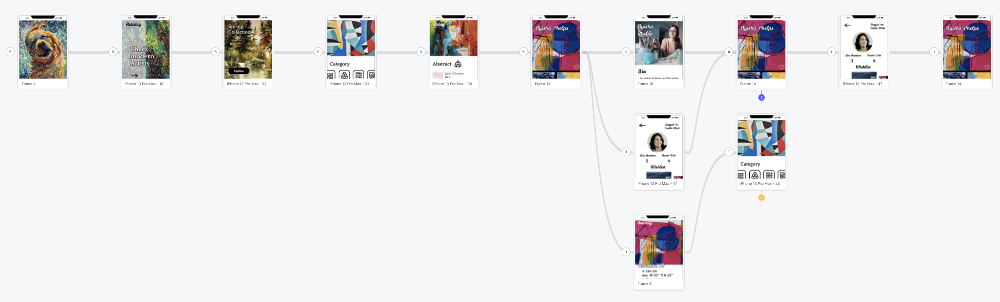
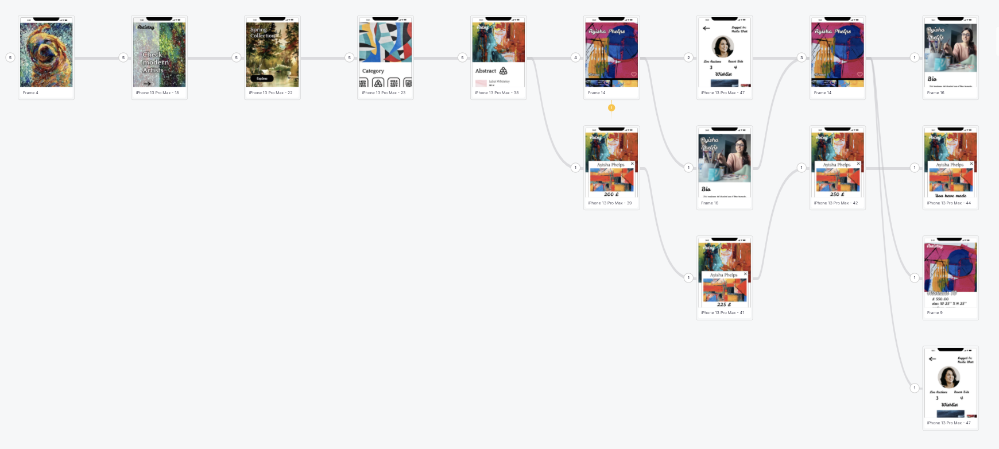
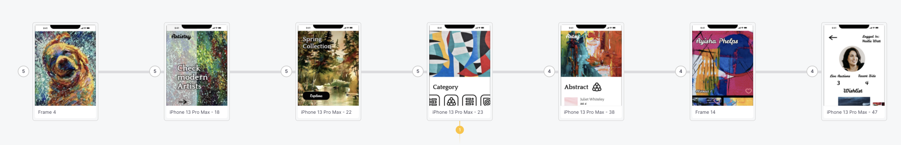
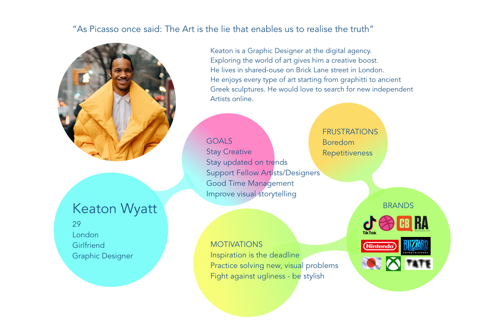

Joseph Beuys famously said "Everyone Can Be An Artist". Artistry aims to let everyone monetise their own pieces of art. Wherever you are just making first steps into the world of art or an art student you can present to the wider audience. The purpose of the application is to help art galleries promote an independent artists and let audience auction their pieces of art.
The Goal
Purpose of the app is to help art galleries to promote an independent artists and build the community
Target Audience
The product is addressed to either art connoisseurs, enthusiasts, lovers, creatives
My Role & Responsibilities:
UI/UX Design, UX Research
Approach
I have used design thinking methodology, applying alongside the user-centered design process to make sure that the overall design decisions are aligned with user needs.
Empathize
→
Define
→
Ideate
→
Design
→
Prototype
→
Test
Research
Project Background
Creating Artistry serves the purpose of helping independent artists find the audience and sell their art. It also helps the audience to explore diverse, equal, new perspectives, visions, visual storytelling pieces of art within a multicultural background.
Research goals
Conclude that expanded artists bio page and auction feature will translate into increasing conversion rate.
Research Questions
How long does it take to sell a piece of art for an artist?
How long does it take to the user to buy a piece of art?
How often users visit artist's profiles?
Key Performance Indicators
Conversion Rate
Time on task
User Error Rate
What factors shall we consider to design a successful art independent product? The surveys has been conducted to gather both quantitive and qualitive data with inclusive group of users. After design modification another round has been conducted.
After understanding of the background research user flows, personas, wireframes and protypes has been created.
Prototype Testing
Two rounds of usability testing has been conducted on selected user flows of the app. Testing took shape of the moderated surveys asking participants to finish particular user paths.Prototype has been adapted to iPhone 13 Pro Max in an portrait orientation. Then the protype has been updated according to insights.
First Round of Prototype Testing
Included everyone without adding any filters to the targeted audience. Below screens presents heatmaps.
Participants came from Poland, Spain, Nigeria, Brazil.

Users has been asked to complete 3 paths.
1.Check Ayisha Phelps Artist Bio Page.
Total participants: 5
Success Rate: 4 (80%)
Avg time: 3 min
Total time users spends on a block: 2 users took between 0s-2min 8s; 2 users took between 2min 8s - 4 min; 1 user skipped the task
Below there is a userflow:

2. Make a bid on Ayisha Phelps Abstract III piece of art?
Total participants: 5
Success Rate: 3 (60%)
Avg time: 4 min
Total time users spends on a block: 2 (4 min 54s - 7min 20s); 1 (7min 20s - 9min 47s); 2 (skipped)
Below there is a userflow:

3. Add Ayisha Phelps Abstract III to Wishlist
Total participants: 5
Success Rate: 4 (80%)
Avg time: 27.5s
Total time users spends on a block: 1 user took between 16-24s; 1 user took between 24-31s; 1 user took 31s; 1 user skipped the task
Below there is a userflow:

Key challenges/KPI's
I have established a common themes to establish positive result on users and business growth
Key Challenges
Initial
Make it available for an art galleries
Made it an independent product in the same time
Engage users to buy art
Engage users to discover art
Do not let Artist's Bio overshadow their piece
Maintain Diversity of Artists
Generate Community
Present/Sell/Promote
KPI's
Standard
Monthly new leads/prospects
Average Order Value
Conversion rate for call-to-action content
Traffic from social media
Engagement rate
Create an engaged and versitile audience
Promote unknown artists
Emphasize an auction aspect
Research
background research - art independent artists
Due to pandemic art market has shifted towards digital auctions.
Research Outcomes
Since art community values both digital and in-person experiences I had
to learn more about art market and the users. I conducted a desk research
to study the market trends, needs and competitors. The goal of the research was to gather
crucial insights about the market as well as to understand the perspective of the end users.
Competitive Research
Art Market Trends Insights
source: sothebys
The art world is pining for in-person communication and a change of scenery.
The audience for buyers will continue to expand in 2021 as rapid technological transformation and the embrace of digital channels will remain ever present.
The art world will continue to make significant strides in advancing sustainability initiatives and reducing its carbon footprint.
Local will be the new global driven by pandemic travel restrictions.
Following the continued rise of cross-category collecting in 2020 which offered contemporary art alongside cars, and design, auctions featuring property from various departments will continue and increase in volume in 2021. Similar to museum exhibitions, more auctions will be contextualized by era or a specific theme rather than by a singular department.
The distinctions between art fairs, galleries, and auction houses will continue to blur in 2021 as the primary and secondary markets converge at an even greater scale than last year.
The demand for works by Western and emerging artists will continue to rise as well as a strong continued appreciation for classical works and luxury
Recent excitement for Black figurative paintings by young African diaspora artists, will segue into a greater interest in African art and art history, which will be enhanced by the continent’s ability to participate digitally at a greater scale than physically within the market.
Competitive Analysis
NY ArtBeat
More like a map of art in NY
Lack of themes
Too many bold adds
Artsy
Excellent selections of contemporary and ancient artists
Interesting 'View in a room' feature
Mix of famous and independent artists
categorized by events or place type rather than art period or style
great selection
confusing descriptions making it hard to evaluate the purchase
I have conducted a usability study which has been involving surveys and interviews that helped me create an empathy maps and better understand user journey and user expectations. I found out that users are equally interested in the art as much as in artist profile. They would prefer to auction pieces of art rather than pay the fixed price. They find it engaging.
User Research:Pain Points
Interaction Level: Having a wishlist and opportunity to connect and contact an artist.Journey LevelRelationship LevelExtenstion: Users would love to be able to explore artists detailed profile to learn and contact them directly.
Personas

Problem Statement
Keaton is a Graphic Designer who needs enjoyable way to explore art online
because it boosts his creativity.